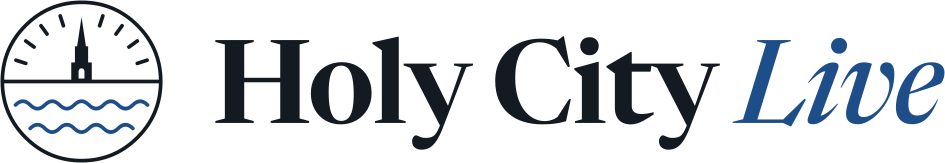

Holy City Live: live flood, heat, construction, public safety and service-day dashboards for Charleston, SC

Flood & Heat Risk
Flood
Construction Near Me
Roadwork
Public Safety Trends
Safety
Service Days
Trash day
More
About
Settings
Copy link
Offline: showing what loaded last